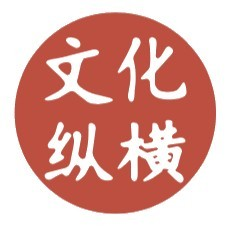

收录于合集
以下文章来源于文化纵横 ，作者高程
 文化纵横 .
倡导文化重建，共同思想未来，发掘不一样的深度阅读。

导读
乌克兰问题局势陡然生变。据央视新闻报道，继俄联邦安全会议、国家杜马、俄罗斯联邦委员会、俄罗斯联邦安全局提请普京承认顿涅茨克人民共和国和卢甘斯克人民共和国独立后，当地时间2022年2月21日，俄罗斯总统普京发表全国视频讲话，宣布承认这两地为独立国家，并签署相关协议与总统令。到底是什么原因，让俄罗斯做出这一举动？拜登上台以来，美俄地缘政治博弈在乌克兰愈演愈烈，为什么非要拿乌克兰做局？
本文认为，乌克兰危机实际上是冷战后国际形势的新一轮调整。因其独特的地缘政治地位，乌克兰这一小国正以“蝴蝶效应”之势推动着世界主要大国之间的长期较量。 从美国角度看，对冷战的记忆，对俄罗斯的敌意与防范，使美国既不希望俄罗斯军事介入乌克兰，又不希望乌克兰危机顺利缓和，它需要用乌克兰这颗棋子来牵制俄罗斯，制造并推动俄欧矛盾，使得欧盟在安全上更加依赖美国，由此达到同时削弱俄罗斯和欧洲的效果。而在俄罗斯方面，军事介入乌克兰是国家面临安全威胁时的防御性反击，俄罗斯绝不能容忍美国通过政治渗透将乌克兰纳入欧盟，进而破坏俄罗斯主导的“欧亚联盟”——这一计划旨在实现独联体国家的市场一体化和资源整合，重塑俄罗斯的地区大国地位，而拥有良好制造业基础的乌克兰是其中最关键的环节。
本文也分析了乌克兰危机对当下中国的启示。在一个美国四处干预却又不能解决问题以致乱象丛生的时代，同样遭遇美国围堵的中国也需要思考，如何成为建设性力量，去改变对自身和新兴市场国家不利的既有国际秩序。
本文节选自《文化纵横》，原题为《乌克兰危机阴影下的大国关系》，欧亚系统科学研究会特转发本文，供读者思考，文章仅代表作者观点。
乌克兰危机阴影下的大国关系
俄罗斯总统普京发表电视讲话，宣布承认乌东两地独立共和国。图源：sputnik news
2014年初至今，乌克兰——这个原本谈不上多起眼的国家——成为了全球讨论焦点。2014年2月，乌克兰人通过街头革命推翻了前总统亚努科维奇。随后，剧情迅速展开并推向高潮：先是在俄罗斯军事力量介入下，克里米亚公投宣布独立并加入俄联邦，乌克兰东部武装进而开始谋求以脱乌为目标的分离运动，以致乌克兰内战爆发。
至今，这个国家的一切似乎都在失控，不止东部陷入间歇性战乱状态，而且在大国的相互争夺中丧失了掌握自身命运的能力，沦为大国博弈的棋子和炮灰。 尽管没有多少人真正关心乌克兰自身何去何从，但发生在它身上的角逐却客观上牵动了冷战后国际形势的新一轮调整。 乌克兰危机的“蝴蝶效应”正助推着一场世界主要大国之间的长期较量与消耗，影响着大国间关系的重组。
01
乌克兰危机背后的俄罗斯与西方世界
乌克兰冲突的背后，不仅涉及基辅与东部地区的关系，也不只是俄乌矛盾的升级，更是俄美之间的较量。乌克兰内战不仅源于“二月革命”后上台的亲西方政府“选边站”政策所导致的内部分裂，还是一场俄美代理人之争。有证据表明俄美两国都较深地介入到自“二月革命”以来的乌克兰冲突。美国是“二月革命”的参与策划者和内乱中基辅政权的外部支持力量；而克里米亚公投和乌东武装的分离运动，背后都有俄罗斯的影响。俄罗斯为乌东民兵组织提供了武器装备，普京也承认俄军“志愿军”进入乌东地区作战。美国和北约已为乌克兰政府军提供不少武器装备，北约“雇佣军”也出现在乌克兰政府军部队中。美国一边训练乌克兰政府军，另一边计划向乌克兰派遣至少300名军人。俄美在乌克兰的冲突已逐渐从幕后走向台前。不久前，奥巴马承认美国对乌克兰“二月革命”政权更迭存在政治介入，并正在考虑公开向乌克兰提供致命性武器；而普京在最新的访谈中也承认克里米亚入俄是俄罗斯政府背后组织策划。
乌克兰问题是俄罗斯与美国主导的西方世界长期矛盾的引爆点，其危机背后是后冷战时期美俄的历史纠葛。脱离这一背景，我们很难深入理解乌克兰冲突的角力点。 苏联解体后，俄罗斯在最初的十几年中，热切地希望融入美国主导的西方世界。尽管叶利钦推行的全盘西化政策让俄罗斯度过了不堪回首的十年惨淡光景，但普京前两任期仍未放弃与西方建立亲密关系的努力。在普京与小布什政府的蜜月期中，俄罗斯强力支持美国的反恐战略，将大量外交资源放在加强与西方的关系上。在一次北约演讲中，他坦诚地表达了俄罗斯的想法：“我们从与世界的对抗中没有得到任何好处。俄罗斯正在重返文明国家的大家庭。她最需要的莫过于自己的意见被倾听，自己的国家利益受到尊重。”
然而，一个外交和军事具有完全自助能力的俄罗斯始终是美国的担忧，对其势力范围辐射至周边独联体国家，并成为主导力量，美国则更不能容忍，即便这并不会挑战美国的全球霸主地位。 美国战略界对冷战的记忆及由此产生的对俄国的敌意与防范，使美国错过了将俄罗斯纳入到西方国际体系的机会。 于是我们看到，美国不顾华约解散时对俄私下做出的“北约不东扩”承诺，一步步蚕食原苏联的空间和势力范围。东欧、波罗的海三国先后被纳入欧盟和北约。小布什政府宣布单边退出美俄《限制反弹道导弹系统条约》，进而在波兰和捷克建立了覆盖俄罗斯全境的反导和雷达监测系统，破坏了两国之间的战略核平衡。
与此同时，令俄罗斯更不能容忍的是，美国试图通过政治渗透和颜色革命的方式控制独联体国家的政权。2003年，美国扶持亲西方的萨卡什维利通过“玫瑰革命”上台；2004~2005年在乌克兰如法炮制，助推了“橙色革命”支持尤先科主政。正处于实力恢复期的俄罗斯对美国上述进攻性战略，更多采取了忍耐态度或温和而富有节制的抗议与反制。但在普京政府和多数俄罗斯人看来，美国的行为完全漠视俄罗斯的安全关切和作为地区大国对其周边的合理诉求，不断得寸进尺地挤压和削弱俄罗斯生存和发展的战略空间。在这次乌克兰冲突爆发前，俄美关系的战略信任的基础早已在这些年的消磨中满目苍夷。
乌克兰事件成为俄美关系急速恶化的导火索，使俄罗斯对美国在周边的攻势由温和抵制变为强硬反击，因为美国在两个维度上挑战了普京政府的战略底线。 首先，俄罗斯不能坐视西方控制其周边的战略缓冲地带的政局，使北约东扩到独联体国家威胁其边境安全成为可能，尤其不能给美国任何机会将乌克兰打造为遏制俄罗斯的军事桥头堡。 尽管“二月革命”的表面起因是亚努科维奇阻碍了乌克兰加入欧盟的步伐，欧盟和北约不能简单混同，且乌克兰有不结盟的国内立法，但俄美战略信任的缺失和此前东欧和波罗的海三国（以及尚未成功的格鲁吉亚）被纳入西方体系的历史经验，俄罗斯对乌克兰被纳入北约的安全焦虑是显而易见的，因为乌克兰政府一旦全面倒向西方成为美国的“傀儡”，便再难以独立地决定自己的外交政策。
其次，在普京政府看来，美国急切地要将乌克兰纳进欧盟，是为破坏俄罗斯主导的“欧亚联盟”。 “欧亚联盟”是普京第三任期的重要承诺，希望借此实现独联体国家的市场一体化和资源整合，重塑俄罗斯的地区大国地位，而拥有4500万人口和良好制造业基础的乌克兰是其中最为关键的环节。美国和西方将“欧亚联盟”计划视为俄罗斯重新构造苏俄帝国野心的体现，美国的全球霸权不能容纳俄罗斯不肯放弃的地区大国梦想。这也是美俄之间的结构性矛盾。
西方世界将俄罗斯军事介入乌克兰描述为侵略性扩张，但在俄罗斯看来，这是国家面临安全威胁和作为地区大国在其战略缓冲区被抵近侵入时的防御性绝地反击。 普京政府用狠决的反制措施回应了西方经济制裁、制定了新的军事准则重新界定国家安全威胁、宣布停止执行《欧洲常规力量条约》，甚至抛出了“俄罗斯是核大国”的威慑，这无一不在展示俄罗斯在乌克兰问题上的战略意志。在克里米亚和乌东问题上，大多数俄罗斯民众站在普京一边，认为其选择维护了国家核心的安全和利益，愿与政府共渡西方制裁的难关。在民族情感强烈的俄罗斯人看来，美国对乌克兰的干预、对俄乌关系的离间以及对削弱俄罗斯的恶意是不可原谅的。根据民调结果，美国成为俄罗斯人心中的头号敌国，这充分显示了普京政府战略决心的社会基础。普京政府和俄罗斯社会似乎做好了应对或者说忍耐西方长期制裁的心理准备。
从美国的角度，它不希望乌克兰危机顺利缓和，更不愿依照对俄罗斯有利的政治安排解决。美国需要用乌克兰这颗棋牵制俄罗斯，制造并推动俄欧之间的矛盾，利用欧洲削弱俄罗斯的实力，令俄欧互相对立和消耗。 乌克兰冲突令北约与俄罗斯的关系从冷战后的合作变为对抗。在2014年9月4日的北约峰会上，俄罗斯自冷战结束以来，首次被明确认定为北约的“对手”；俄罗斯随后修改军事准则，将北约和美国列为对俄罗斯国家安全的主要威胁。克里米亚事件和乌克兰危机使俄美之间本已十分脆弱的战略互信进一步崩溃，这种状况在短期内不大可能出现实质变化。
乌克兰冲突同时引发了俄欧和美欧关系的微妙变化。从美国成功以马航MH17事件为契机迫使欧洲、日本和澳大利亚对俄罗斯进行严厉制裁可以看出，在大国关系上，欧洲没有能力改变或影响美国的决策，美国依然保持着令其西方盟友“选边站”的能力。普京多年来一直将欧洲作为其外交重中之重，特别在普京 –施罗德– 希拉克三驾马车年代与德国和法国建立了国际事务中的默契合作关系，在一定程度上制约了小布什的全球单边霸权政策。这种良好的互动一直延续到与德法现任领导人的私人关系上。但在乌克兰危机爆发后，军事缺乏自主能力和以大西洋联盟大局为战略首位的欧盟选择了配合美国利益的对俄政策，尽管这其中存有无奈和不满。
然而，乌克兰危机不足以动摇俄欧的基本关系。俄欧之间没有结构性政治矛盾，相反经济联系十分紧密。西方对俄罗斯制裁导致的经济损失主要由欧盟国家担负，如今多数欧盟国家不希望在制裁中消耗自身。欧盟国家为乌克兰冲突已损失几百亿美元，这对于已持续停滞两年的欧洲经济而言，无疑是雪上加霜。如今希腊和宗教极端主义问题是困扰欧洲的主要问题，德国、法国、意大利、西班牙等主要欧洲国家都不愿背负乌克兰这一包袱，更不愿为此与俄罗斯对抗。俄罗斯利用了欧盟内部对俄乌问题的分歧谋求与欧洲国家关系的缓和，对其内部进行分化，制造了这些国家与美国之间的矛盾。 通过乌克兰危机，美国成功地在欧洲树立了俄罗斯这个“敌人”作为靶子，加强了欧盟国家对美国的安全依赖，但美欧之间的信任关系却在向相反方向发展，因为美国在试图削弱俄罗斯的同时，欧洲的实力和地位也同时遭到弱化。
02
乌克兰危机对中俄关系和美国亚太政策的影响
我们把目光离开如今处于准冷战状态的欧洲，乌克兰危机的持续和美俄关系的恶化，是否会影响美国的亚太及对华战略的定位呢？ 有观点认为，如果乌克兰冲突陷入长期拉锯，美国有可能调整目前以遏制中国为主的“重返亚洲”战略。笔者认为这种可能性不大。从现实政治角度，中美基于实力对比变化的结构性矛盾，更重于美俄之间的战略性矛盾。 美俄矛盾的加剧在一定程度上是由于美国战略界对俄国的冷战思维惯性，和普京政府对周边地缘缓冲带的安全过于敏感所致。但是，中美之间却不存在战略意图的误判，实力不断上升的中国试图寻求与此相应的国际地位，希望改变不合理的国际秩序，而这正是美国所担忧和不能接受的。
因此，美国在亚太地区的对华遏制政策和在欧洲继续削弱俄罗斯的政策将并行。为避免在战略重点地区主导权被削弱，美国在亚洲尽力防止中日形成合作，在欧洲则努力阻止俄罗斯和欧盟达成战略和解与互信。 相对实力衰落的美国正在推动主流国际社会和区域大国与中俄的对立，以此维持自己在亚太和欧洲主导权的合法性，而这种状态对地区合作与发展是破坏而非建设性的。此外，苏联解体后，美国主导的北约继续东扩，不断蚕食俄罗斯在后苏联时代的战略空间，直至冲突爆发在俄罗斯最后也是最重要的俄乌边境防线上。这也是在警示中国，美国在处理具有安全自助能力的大国关系时，具有根深蒂固的现实主义地缘政治思维，无论这种思路体现为以军事为主的硬制衡，还是以国际经济规则为主的软制衡。中俄与美国主导的集团政治国际生态之间的矛盾成为了两国战略协作的重要基础之一。
除了来自美国主导的国际体系的压力，对西方相似的情感也是中俄两国走近的原因之一。 两国都曾经希望并努力使自己被主流国际社会所认可和平等接纳，但美国主导的西方世界无法宽容地理解与自己有类似大国诉求的民族国家所持有的不同想法，不能容纳大国立足自身特点的发展模式及管理社会的方式。 美欧习惯于用一套放之四海而皆准的标准和非友即敌的思维方式去看待中俄两国，常年以人权等名义干涉两国内政，利用国际话语权的优势对中俄社会和政治高层进行各种抹黑和妖魔化。民主转型中的俄罗斯虽然存在自身的问题，但其社会基本价值观和政治制度与西方并没有本质分歧，而美国和西方世界仍出于对普京强人式统治的不满不喜，在其内部扶持反对势力。相比而言，中俄两国虽然宗教、文化和政治制度不同，但却形成了相互尊重、平等独立的大国互动关系。中俄关系这种性质不同于美国与其欧洲、日本盟友的不对等关系，两国之间没有强加于人和指手画脚，而是尊重彼此自主意识、顾及对方作为大国的地缘核心利益，在大节上相互倚重的协作伙伴。同时，如今的中俄关系也异于上个世纪50年代建立在意识形态“情谊”之上的中苏从属关系，而是基于正常国家的战略利益考量的平等互助关系。
中俄保持和深化全面战略协作伙伴关系是未来较长一段时期的大势所趋和努力方向。这不只是应对美国看待大国关系冷战思维和长期面对西方世界傲慢与偏见的“抱团取暖”，同时也合乎中俄两国自身的现实和长远利益。中俄战略协作和利益合作关系是长期性和结构性的，具有内在基础。乌克兰危机只是促进中俄关系的催化剂，它减轻了俄罗斯国内对中俄合作的阻力，不是改变两国高层想法的转折性事件。普京第二任期就有借中国崛起之东风来振兴俄罗斯的战略思路，但其国内阻力大，中俄之间的战略互信亦未水到渠成。中国国家领导人上任后首访俄罗斯，两位领导人在对世界大势的看法和个人脾性上十分投缘，深化中俄战略协作在两国高层达成共识和互信。此后在中俄两国高层罕见的高频次会面和紧密沟通下，中俄战略协作关系快速推进。尽管中俄关系深化的障碍客观存在，两国民间的信任也有待加强，但乌克兰危机爆发后，俄罗斯的东向战略与中国的西进战略开始出现越来越多的交集。
从现实经济角度看，首先，乌克兰危机和西方制裁可能带来全球能源格局的变化，俄能源出口市场的布局开始向亚洲转移。 对于能源需求巨大、谋求多种渠道分散风险的中国而言，其需要抓住这一机遇。目前中国已与俄罗斯签下十几年来谈判举步维艰的天然气协议。 其次，西方的制裁将迫使俄罗斯在金融领域与中国形成越来越深的相互依赖关系。 如今，俄罗斯商业大亨已开始改持银联卡，陆续将更多美元兑换为港币，存放在中国香港的中资银行，而中俄双边贸易、投资和借贷中开始提高本币结算规模，俄罗斯接受人民币支付的范围正在扩大，这对于人民币的国际化将产生重要影响。 再次，西方制裁令普京政府开始在经济战略上促进俄罗斯市场的多元化，对欧洲的经济反制涉及农产品市场的大规模转移，并可能继续扩展到工业产品领域 ，中俄经贸合作也由此将迅速扩大并深入到高铁建设、农业、军事技术、卫星导航系统、港口、物流、IT产业、制造业、核电等诸多领域。
由于中俄之间还具有超越经济利益的共同战略诉求，因此两国关系越来越不止于纯经济层面的互利共赢和务实合作，过去基于短期相互利用的一次性“投桃报李”的互动模式发生改变，正在形成具有互信基础的长期战略协作关系。中俄两国分别在东亚和欧洲面临美国主导的同盟体系的合力夹击，东海、南海和乌克兰只是具体的角力点和表象。其背后的核心问题在于，同样作为具有悠久历史和文明传统的军事自助大国，中俄两国都不能接受按照美国和西方世界设定的道路决定自身的对内事务和对外政策，因此需要对于美国军事同盟体系和由此形成的政治集团化国际生态进行反制，为文化传统和文明的多元性搏得生存和发展空间。
从防御性角度，中俄的战略互助可以在彼此面对西方国家的现实和舆论压力，或与美国主导的政治集团进行博弈时，给予对方一定支持、声援，至少起到政治平衡作用，避免自己在大国关系中陷入孤立。 在乌克兰危机中，中国官方一直在努力推动俄乌关系和乌克兰局势的缓解。在西方对俄罗斯进行经济制裁、政治孤立和舆论打压时，中国始终态度鲜明地反对这种集团政治围剿，并给予俄罗斯以强有力的支持。 未来中国在台湾、南海和钓鱼岛问题上可能在国际社会面临类似俄罗斯在乌克兰问题上的困境，也需要拥有大国层面的伙伴。
从积极作为的角度，我们看到，相对实力衰落的美国已经逐渐丧失为世界和地区繁荣提供更多建设性公共产品的能力和意愿。美国利用南海、钓鱼岛和乌克兰等问题在亚洲和欧洲助推了争端，在中东、西亚、北非引爆了“阿.拉伯.之春”系列革命，事后却都不愿承担相应的责任。那么，在一个美国四处干预却又不能解决问题以致乱象丛生的时代，在一个大国互相猜疑、牵制，地区一体化进程由此受阻的时期，中俄需要思考的问题是，如何能够成为建设性的力量，去改变对自身和新兴市场国家不利的既有国际秩序？这要求两国的合作不仅限于双边，而且需要进一步团结印度、巴西、南非等区域大国，在金砖国家等新兴市场国家合作机制下发挥更大作用，同时在上合、亚太经合、亚信、亚欧会议等多边合作组织中全面深化协作关系。
作为世界第二大经济体的中国于2015年牵头成立了亚投行，成为日美主导的亚洲开发银行的替代性选择，并与越来越多的国家和经济体签订双边货币协议进行人民币直接支付，作为世界第二大石油出口国的俄罗斯已经开始着手推动石油的去美元化进程，而金砖国家开发银行也已开业，美国的金融霸权地位将继续松动。与此同时，中国推动的“一带一路”与俄罗斯正在推进中的“欧亚经济联盟”也正在建立合作对接点，两国在这一问题上已基本达成战略互信。一切都只是开始。
（作者：高程，中国社会科学院拉丁美洲研究所副所长）
排版 | 彭雯昕
本文章来源于《文化纵横》2015年第2期
文章观点不代表本平台观点